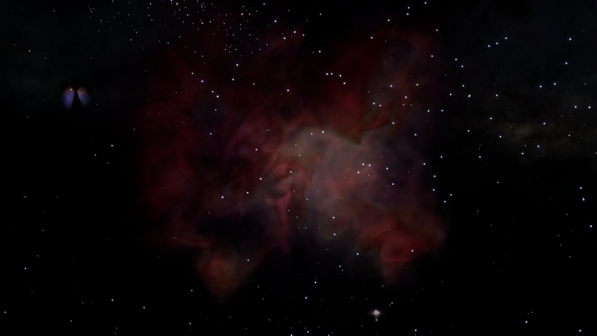

An Unregistered Comms Beacon can be found in the Dr. Kay’s Heart system, orbiting body A 1 b.
The system was previously known as Greae Hypa EF-R d4-98, and is located in the Dr. Kay’s Soul Nebula, which was previously named Greae Hypa AA-A h23.
The transmission times of this beacon are, on the hour, every hour.
The transmitted message is the following:
O7 CMDRS
I HAVE WANDERED DOWN A NEW FORK IN THE ROAD BUT MY HEART AND SOUL WILL FOREVER BE HERE
TO PARAPHRASE A C CLARKE 2010 ODYSSEY TWO ALL THESE WORLDS ARE YOURS USE THEM TOGETHER USE THEM IN PEACE
I LOVE YOU ALL
DR K R SIGNING OFF
(repeated four times)

This Unregistered Comms Beacon was added in October 3307, when Dr. Kay Ross left Frontier.
Additionally, Dr. Kay’s voice can be heard in the background station announcements at “The Tavern” station, in the 59 Virginis system.
59 Virginis is the home system of Alchemy Den Player faction, and Dr. Kay “Did the lines as an incentive on a charity stream that the leader ran”.
Dr. Kay’s voice was added to the station with Update 11, on the 15th March 3308.
References:
• Frontier Forums: https://forums.frontier.co.uk/threads/dr-kays-heart-and-soul-put-into-the-galaxy.592316
• Twitter: https://twitter.com/drkayross/status/1439930852335656961
• Twitter: https://twitter.com/drkayross/status/1503816912106663939
• Twitter: https://twitter.com/drkayross/status/1503867448839348236